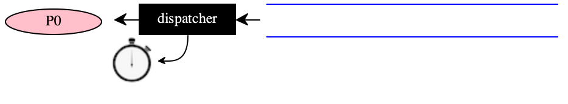

29 —
Tuesday, 21 April 2020
An operating system is a collection of things that don’t fit into a language. There shouldn’t be one. – Dan Ingall, Byte Magazine 1991
Dan Ingall was a member of the team that produced SmallTalk, the very first object-oriented programming language. (Okay, I don’t like Simula67.)
Sharing Resources, Sharing Time
No matter how “wealthy” our computers become, some computational resource (time, energy, storage memory, printers, network access, etc) will always be scarce. It is the task of the operating system to play arbiter—
market in economic terms— to match demand for a resource with supply.
The Big Picture
The dispatcher is the first small piece of software that exists. It uses its time slice to observe an associated queue. When a process shows up in the queue, the dispatcher sets up this first process to run. A process may spawn other processes, an act that means that a new program is added to the end of the queue. If the currently running process exhausts its allocated slice of time on the CPU before it completes its computation, the dispatcher’s alarm goes off and the rest of the current process’s computation is turned into a new process, which is added to the end of the queue.
The first five rows of the following table illustrate how this phase of process-dispatching works:
1 |
|
|
| the dispatcher exists, Process 0 sows up in the queue |
2 |
|
| the dispatcher sets the clock and permits Process 0 to run | |
3 |
|  |
| Process 0 spawns Process 1, which gets added to the end of the queue |
4 |
|
|
| Process 0 does not complete in the allotted time, the dispatcher swaps it out, adding the rest of the computation to the end of the queue |
5 |
|
|
| the spawned Process 1 is given time on the CPU/core |
6 |
|
|
| eventually many processes are in the queue with one running at any moment |


Processes cannot only spawn another process, they may also suspend themselves because there is no work to do; they can request that other processes suspend themselves or even kill themselves.Do read up on why the Java group deprecated the Thread.stop procedure.
At first glance, an operating system uses a generator-style yield construct to switch back and forth between its driver and the processes. Except that time seems to play a role, and time does not play a role in the generators you know.
This lecture will reduce both concepts—
Using Racket
This lecture uses plain Racket instead of the model languages of the past. Thus,
instead of |
| we write |
"grab" |
| |
"@" |
| a variable definition |
"=" |
| |
"!" |
| a variable reference |
"if-0" |
| if plus predicates |
Small Examples
Lectures/29/example-plain.rkt
#lang racket ;; - - - - - - - - - - - - - - - - - - - - - (let/cc exit-point (* 10 (exit-point 42) 20)) ;; - - - - - - - - - - - - - - - - - - - - - (+ 1 (let/cc done (* 2 (done 42)))) ;; - - - - - - - - - - - - - - - - - - - - - (/ (let/cc exit1 (* 2 (let/cc done (+ 1 (exit1 42))))) 2) ;; - - - - - - - - - - - - - - - - - - - - - (/ (let/cc exit1 (* 2 (let/cc done (+ (done 1) (exit1 42))))) 2) ;; - - - - - - - - - - - - - - - - - - - - - (let ([cell (λ (x) x)]) (begin (set! cell (let/cc done (if (and (number? cell) (zero? cell)) 0 done))) (if (and (number? cell) (zero? cell)) 42 [cell 0])))
Generators
Lectures/29/define-generator.rkt
#lang racket (provide gen using-exn) ;; - - - - - - - - - - - - - - - - - - - - - - - - - - - (require "generator.rkt") ;; - - - - - - - - - - - - - - - - - - - - - - - - - - - ;; gen yields n, n-1, n-2, ... every time it is called ;; until it falls off the end (define/generator gen yield (λ [x] [letrec ([pythn (λ (x) (cond [(zero? x) using-exn] [else (yield x) (pythn (- x 1))]))]) (pythn x)])) (define using-exn 111)
Lectures/29/using-generator.rkt
#lang racket (require "define-generator.rkt") ;; - - - - - - - - - - - - - - - - - - - - - - - - - - - (define [using n] (let* ([x (gen n)] [y (gen 33)] [z (gen 33)]) (+ z y x))) (module+ test (require rackunit) (check-equal? (using 3) 6)) Figure 115: Using the Generator of (figure-ref fig:define-generator)
Lectures/29/generator.rkt
#lang racket ;; - - - - - - - - - - - - - - - - - - - - - - - - - - (provide #; (define/generator g:id name-of-yield:id body:expr) ;; SYNTAX ;; implements a Python-style generator that is like a ;; funciton but `yields` intermediate values define/generator) (define-syntax-rule (define/generator gen yield pythn) (define gen (local ((define (yield y) (let/cc c (define go resume) (set! resume (enter c)) (go y))) (define [[enter c] z] (let/cc k (set! resume k) (c z))) (define resume (enter (λ (x) (the-end (pythn x)))))) (λ (x) [resume x])))) (define (the-end x) (error 'gen (~a THE-END x))) (define THE-END "gen fell off the end ")
A Kernel
(provide ; [ {-> Empty} -> Void ] ; (set-timer-interrupt-handler ih) runs ih when the timer expires set-timer-interrupt-handler ; [ N -> Void ] ; (start-timer n) set a timer to expire in n msec start-timer ; [ -> Void ] stop-timer)
Lectures/29/booting.rkt
#lang racket (require "driver.rkt") (define [(make-process action outputs)] (action) (let loop ([n outputs]) (when (cons? n) (displayln `[~~~~~~ ,(first n)]) (loop (rest n)))) (displayln `[-- ,(string-join (map ~a outputs) ", ") --])) (define P0 (make-process (λ () (spawn P1)) (build-list 10 -))) (define P1 (make-process void (build-list 10 +))) (boot P0)
Lectures/29/driver.rkt
#lang racket/gui (provide boot spawn) ;; - - - - - - - - - - - - - - - - - - - - - - - - - - - - - - (require "clock.rkt") (require "queue.rkt") (require "process.rkt") (define TICK 5) (define *queue (new queue%)) #; { Process Continuation -> Empty } (define [(make-timer-interrupt-handler p back-to-driver)] (let/cc rest-of-process (send p swap (lambda () (rest-of-process 'go))) (send *queue enq! p) (back-to-driver))) #; { [-> Void] -> Void } (define (spawn code) (define p (new process% [code (λ () (code) (stop-timer))])) (send *queue enq! p) p) #; { [-> Void] -> Empty } (define (boot make-process-0) (define p0 (spawn make-process-0)) (let/ec exit (let driver () (cond [(send *queue deq!) => (λ (p) ;; the current process (let/cc back-to-driver (set-timer-interrupt-handler (make-timer-interrupt-handler p back-to-driver)) (start-timer TICK) (send p run back-to-driver)) (driver))] [else (exit '[all done])]))))
Lectures/29/process.rkt
#lang racket (provide #; { Class [init (-> Void)] (show (->m JSexpr)) (run (->m Continuation)) (swap (->m Continuation)) } process%) ;; - - - - - - - - - - - - - - - - - - - - - - - - - - - - - - (define process% (let ([*pid 0]) (class object% [init code] (super-new) (field [pid *pid]) (set! *pid (+ *pid 1)) (define/public (show) `[process ,pid]) (field [thunk (lambda () (code) (return))]) (field [return #false]) (define/public (run back) (set! return back) [thunk]) (define/public (swap t) (set! return #false) (set! thunk t)))))
Auxiliaries
Lectures/29/queue.rkt
#lang racket (provide #;{ (All (X) (Class [enq! (->m X Void)] (deq! (->m (U X False))))) } queue%) ;; - - - - - - - - - - - - - - - - - - - - - - - - - - - - - - (define queue% (class object% (super-new) (define *q '[]) #; {-> JSexpr} (define/public (show) `[queue ,(map (λ (i) (send i show)) *q)]) #; {X/show -> Void} (define/public (enq! p) (set! *q (append *q (list p)))) #; {-> (X/show u False)} (define/public (deq!) (and (cons? *q) (begin0 (first *q) (set! *q (rest *q)))))))